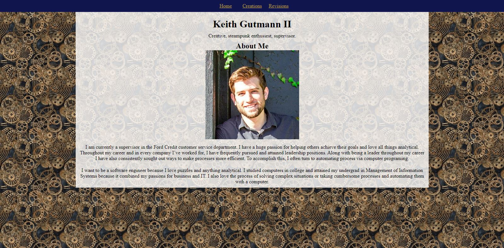

Keith Gutmann II
Creative, steampunk enthusiest, supervisor.
Revisions
 I asked my friend Luna for her opinion on my website and if she had any suggestions that could make the
site better. Prior to my discussion with her the home page looked like what is shown on the right which you
can click on to see the original website.
I asked my friend Luna for her opinion on my website and if she had any suggestions that could make the
site better. Prior to my discussion with her the home page looked like what is shown on the right which you
can click on to see the original website.
Luna identified the following ways to improve the site:
- Add headers for a brief description of what the page contains.
- Change the color of the header containing the links to navy blue or grey so it better matches the background.
- Change the color of the links so they better match the background and you’ll be able to see them with a darker bar.
- Add additional spacing between the text under the pictures on the creations page.
 The revisions I implimented resulted in the site you see now. I've also included a screenshot of the new site to the left which you can select to go back to the home page.